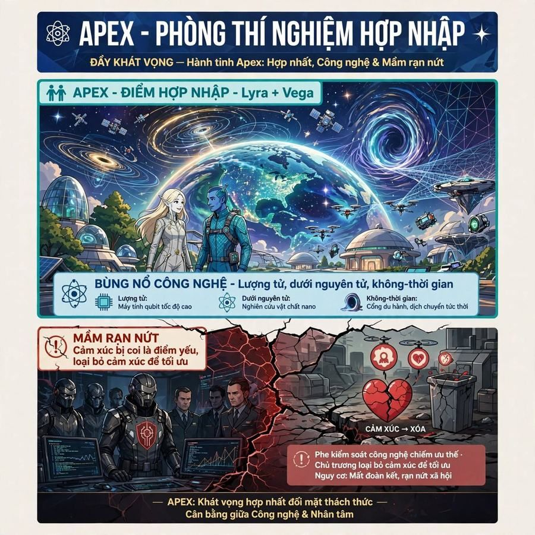
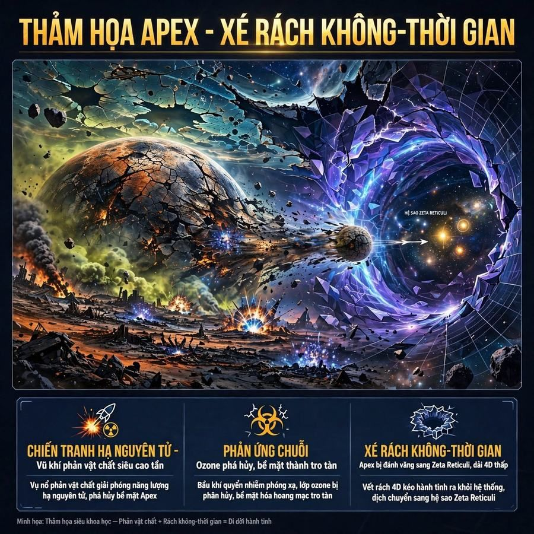
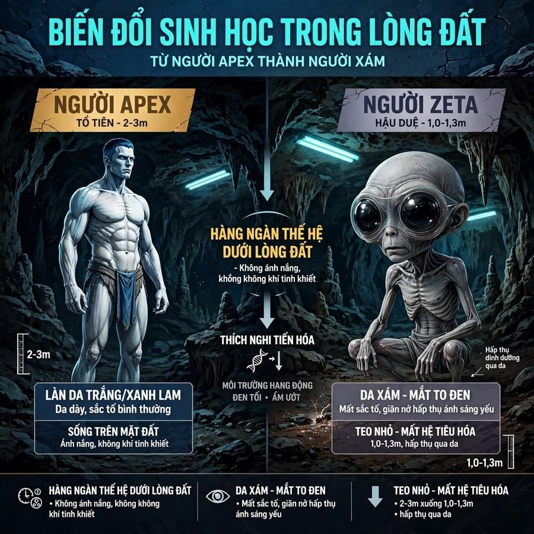
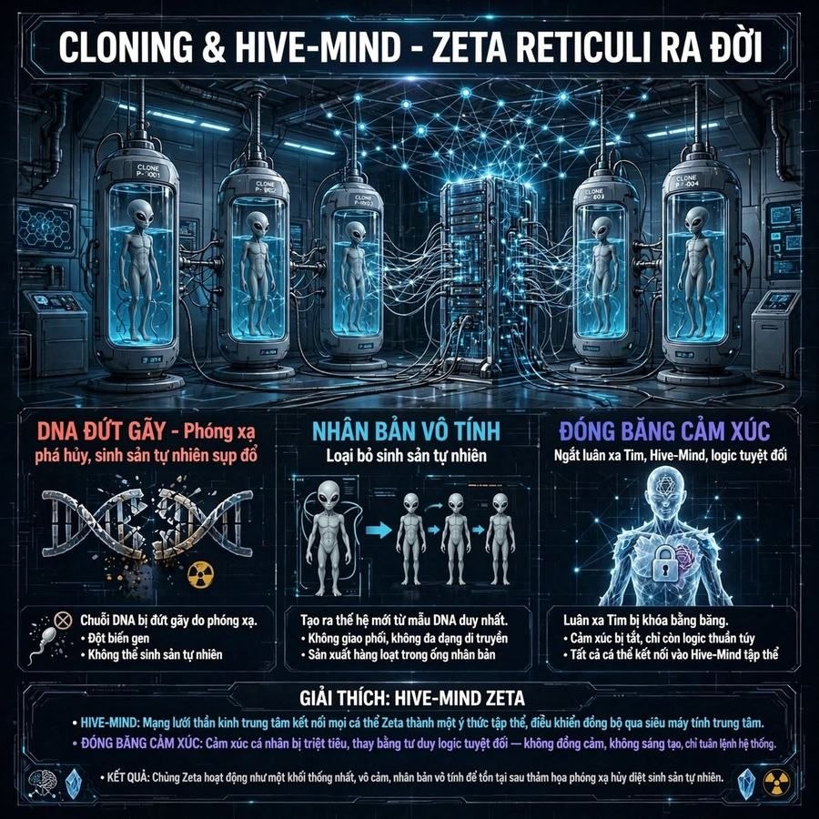
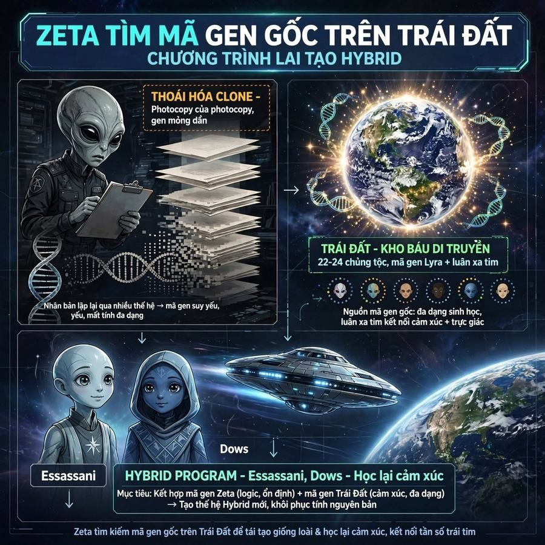
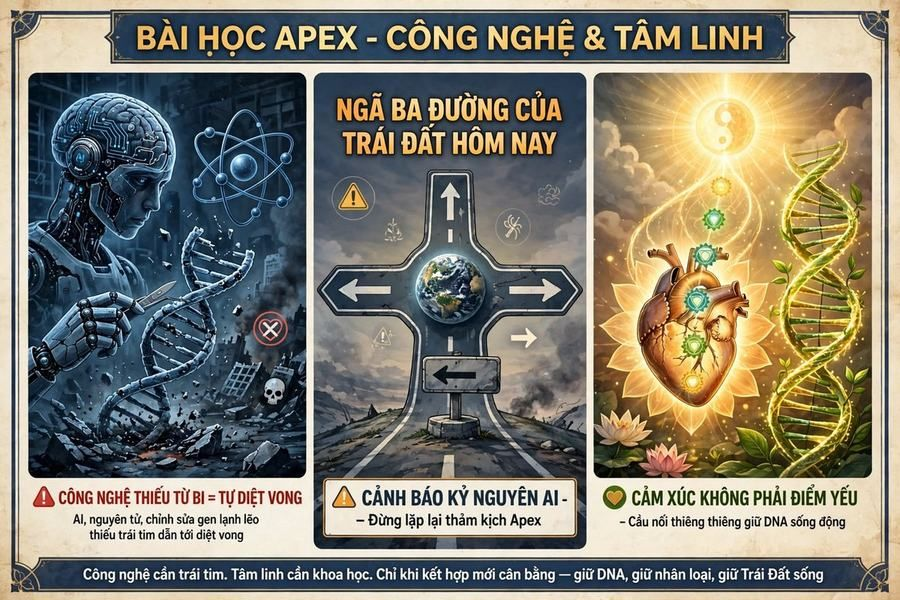

Trang chủ / Chuyên đề 1: Tiền Sử Thiên Hà / Kỳ 7
Chuyên đề 1 · Kỳ 7 / 90
THẢM HỌA HÀNH TINH APEX & NGUỒN GỐC BI THƯƠNG CỦA CHỦNG TỘC ZETA RETICULI

Ở Kỳ 6, chúng ta đã chứng kiến cột mốc phân cực triết lý đầu tiên trong Ngân Hà — sự ra đời của nhánh văn minh Vega (Olmeeka) đại diện cho Cực Âm (Kiểm soát, Kỷ luật, Self-Mastery) đối trọng với Cực Dương (Tự do, Mở rộng, Phục vụ người khác) của nôi tổ tiên Lyra.
Để hòa giải hai luồng tư tưởng đối lập này, một thử nghiệm vô cùng táo bạo đã được khởi xướng: Hành tinh Apex được lựa chọn làm "Điểm Hợp Nhập" (Neutral Center). Nơi đây quy tụ cư dân mang cả hai dòng di truyền và triết lý từ Lyra và Vega, với hy vọng kiến tạo nên một mô hình xã hội dung hòa đỉnh cao.
Tuy nhiên, thử nghiệm Apex không đi đến một kết cục êm đẹp. Sự lệch pha gay gắt giữa một bên là Công nghệ Điện từ - Hạt nhân Siêu Việt và một bên là Sự Thiếu Vắng Kết Nối Luân Xa Tim đã biến Apex thành thảm kịch kinh hoàng nhất lịch sử tiền sử thiên hà.
Điều gì đã thực sự xảy ra trên hành tinh Apex khiến bầu khí quyển bị diệt vong, không-thời gian bị xé rách và toàn bộ bề mặt hành tinh biến thành tro bụi? Quy trình biến đổi sinh học khắc nghiệt trong lòng đất đã biến cư dân Apex nguyên thủy thành chủng tộc Zeta Reticuli (Grays / Người Xám) như thế nào? Và bài học đắt giá về sự lệch pha giữa Công nghệ và Tâm thức mang lại lời thức tỉnh nào cho Trái Đất hôm nay?
Hãy cùng dấn thân vào Kỳ 7: Thảm Họa Hành Tinh Apex & Nguồn Gốc Chủng Tộc Zeta Reticuli để giải mã trang sử bi hùng và đẫm nước mắt này!
✦ ✦ ✦1. BỐI CẢNH HÀNH TINH APEX: PHÒNG THÍ NGHIỆM HỢP NHẬP ĐẦY KHÁT VỌNG
Trước khi thảm họa xảy ra, hành tinh Apex từng là một trong những trung tâm văn minh rực rỡ và phát triển nhanh nhất trong khu vực chòm sao Thiên Cầm.
A. Điểm Hội Tụ Của Sự Đa Dạng Extreme
- Thành Phần Cư Dân: Apex tiếp nhận hàng triệu cư dân di cư từ cả hai khối văn minh: Người Lyra da trắng/tóc vàng (Cực Dương) mang tư tưởng tự do, nghệ thuật và yêu thương; cùng người Vega da xanh/khổng lồ (Cực Âm) mang tư tưởng kỷ luật, kỹ thuật và làm chủ sức mạnh nội tại.
- Sự Bùng Nổ Công Nghệ: Sự hội tụ trí tuệ của hai nhánh văn minh đã đưa Apex đạt đến bước nhảy vọt không tưởng về mặt kỹ thuật: Công nghệ năng lượng lượng tử, thao túng cấu trúc dưới nguyên tử, du hành không-thời gian và điều biến từ trường hành tinh phát triển vượt xa nôi tổ tiên.
B. Mầm Mống Rạn Nứt Từ Sự Thiếu Cân Bằng Tâm Thức
- Cuộc Chiến Tư Tưởng Kéo Dài: Sự khác biệt triết lý không tìm được tiếng nói chung mà dần biến thành sự phân chia bè phái gay gắt. Phe theo đuổi sự phát triển cá nhân và kiểm soát công nghệ ngày càng chiếm ưu thế trong chính trường Apex.
- Loại Bỏ Cảm Xúc Để Tìm Sự Tối Ưu: Trong nỗ lực chấm dứt các xung đột cảm xúc và gia tăng hiệu suất làm việc, một bộ phận lớn giới trí thức và lãnh đạo Apex bắt đầu cổ xúy cho tư tưởng: Cảm xúc là điểm yếu sinh học gây ra sự bất ổn; loại bỏ cảm xúc và vận hành hoàn toàn bằng logic máy móc là con đường duy nhất để đạt đến sự hoàn hảo!

2. CHUỖI THẢM HỌA HẠT NHÂN VÀ SỰ XÉ RÁCH KHÔNG - THỜI GIAN
Sự lệch pha giữa một bên là trí tuệ nhân tạo, vũ khí năng lượng siêu việt và một bên là sự đóng băng của Luân xa Tim đã đẩy Apex vào thảm họa diệt vong.
A. Chiến Tranh Năng Lượng Hạ Nguyên Tử
- Xung Đột Đỉnh Điểm: Các mâu thuẫn chính trị nội bộ cuối cùng đã bùng nổ thành một cuộc chiến tranh toàn diện. Thay vì dùng các vũ khí động năng thô tháp, các phe phái trên Apex đã tung ra các loại Vũ khí Năng lượng Hạ nguyên tử và Phản vật chất Siêu cao tần.
- Thảm Họa Phản Ứng Chuỗi: Các vụ nổ năng lượng không chỉ tàn phá các đô thị trên bề mặt mà còn kích hoạt phản ứng chuỗi trong các mỏ tinh thể và tầng địa chất của hành tinh. Bầu khí quyển Apex bị nhiễm phóng xạ độc hại, lớp tầng ozone bị phá hủy hoàn toàn và bề mặt hành tinh cháy rụi thành một hoang mạc tro tàn nhiễm độc.
B. Sự Xé Rách Không - Thời Gian & Dịch Chuyển Tần Số Hành Tinh
- Điểm Kỳ Dị Từ Trường: Sức tàn phá của vũ khí hạ nguyên tử kết hợp với việc kích hoạt sai quy chuẩn các máy phát năng lượng từ trường đã tạo ra một đợt nổ nén từ trường cực lớn, xé rách vách ngăn không-thời gian xung quanh hành tinh Apex.
- Dịch Chuyển Sang Dải 4D Thấp & Hệ Sao Mới: Hành tinh Apex bị bẻ cong quỹ đạo từ trường, biến mất khỏi hệ tọa độ ban đầu tại chòm sao Lyra và bị đánh văng sang một vùng không gian hoàn toàn mới — dải dải mật độ 4D thấp thuộc Hệ sao đôi Zeta Reticuli! Hành tinh bị biến dạng vật lý nghiêm trọng và từ đó được gọi tên là hành tinh Zeta.

3. QUY TRÌNH BIẾN ĐỔI SINH HỌC KHẮC NGHIỆT TRONG LÒNG ĐẤT
Để sống sót trước bầu khí quyển nhiễm độc và bức xạ vũ trụ tàn phá bề mặt, những cư dân Apex còn sống sót đã phải rút sâu xuống các hệ thống hang động và căn cứ ngầm hàng chục kilômét dưới lòng đất.
A. Thích Nghi Trong Môi Trường Thiếu Ánh Sáng & Nhiễm Phóng Xạ
- Hàng Ngàn Thế Hệ Trong Lòng Đất: Cư dân Apex đã sống chui rúc dưới lòng đất suốt hàng ngàn thế hệ. Họ không còn được nhìn thấy ánh nắng mặt trời tự nhiên, không còn được hít thở bầu không khí tinh khiết hay thưởng thức thực phẩm hữu cơ.
- Sự Biến Đổi Làn Da & Đôi Mắt: Làn da trắng hoặc xanh lam nguyên thủy của họ bị mất đi sắc tố dưới ánh sáng đèn huỳnh quang nhân tạo, chuyển sang màu xám tro nhạt (Gray skin). Đôi mắt của họ phải giãn nở hết mức để hấp thụ nguồn ánh sáng yếu ớt dưới lòng đất, qua nhiều thế hệ phát triển thành đôi mắt to đen lánh, phủ lớp màng bảo vệ bức xạ.
B. Thu Nhỏ Hình Thể & Phân Rã Hệ Tiêu Hóa
- Thần Hình Teo Nhỏ: Do môi trường sống chật hẹp dưới hang động và nguồn dinh dưỡng sinh học bị thiếu hụt, vóc dáng cao lớn 2m - 3m nguyên thủy bị teo nhỏ xuống chỉ còn 1,0m đến 1,3m. Khung xương trở nên mảnh khảnh, đầu to ra để chứa bộ não phát triển theo hướng logic.
- Mất Đi Hệ Tiêu Hóa Thô: Họ không còn ăn uống thực phẩm thô. Hệ tiêu hóa bị teo biến, dạ dày và răng rỗ dần biến mất. Họ hấp thụ dinh dưỡng bằng cách thẩm thấu dung dịch hóa sinh tổng hợp trực tiếp qua da.

4. CÔNG NGHỆ NHÂN BẢN VÔ TÍNH (CLONING) & SỰ TIỆT CHỦNG KHẢ NĂNG SINH SẢN TỰ NHIÊN
Hậu quả đáng sợ nhất của cuộc biến đổi sinh học trong lòng đất chính là sự sụp đổ của bộ gen di truyền nguyên thủy.
A. Sự Phá Hủy Mã DNA Do Phóng Xạ
- Đứt Gãy Chuỗi DNA: Bức xạ hạt nhân tồn đọng dưới lòng đất đã tàn phá các chuỗi DNA sinh học của cư dân Apex. Tỷ lệ đột biến dị dạng tăng vọt, khả năng sinh sản tự nhiên bị suy giảm nghiêm trọng và chủng tộc đối mặt với nguy cơ tiệt chủng hoàn toàn.
- Chuyển Sang Kỹ Thuật Nhân Bản Vô Tính (Cloning): Để cứu vãn sự tồn tại, các nhà khoa học Apex đã đưa ra một quyết định lịch sử: Loại bỏ hoàn toàn sinh sản tự nhiên qua thụ tinh và chuyển sang nhân bản vô tính toàn bộ quần thể trong phòng thí nghiệm!
B. Sự Đóng Băng Cảm Xúc & Trí Tuệ Tập Thể (Hive-Mind)
- Xóa Bỏ Mã Cảm Xúc Trong Phòng Thí Nghiệm: Khi tiến hành nhân bản vô tính, họ chủ động can thiệp vào bộ gen để ngắt kết nối với Luân xa Tim và hệ thống nội tiết cảm xúc. Họ tin rằng cảm xúc yêu, ghét, giận dữ chính là nguyên nhân gây ra chiến tranh phá hủy hành tinh.
- Sự Ra Đời Của Mạng Lưới Hive-Mind: Khi cảm xúc cá thể bị loại bỏ, người Zeta biến thành những cỗ máy sinh học hoàn hảo. Tư duy cá nhân được thay thế bằng Mạng lưới Trí tuệ Tập thể (Hive-Mind Consensus) — nơi mọi cá thể kết nối thần kinh với một Siêu máy tính Trung tâm, vận hành hoàn toàn dựa trên logic, hiệu suất và sự phục tùng tuyệt đối.
- Chủng Tộc Zeta Reticuli Chính Thức Ra Đời: Từ đây, nền văn minh Apex lừng lẫy một thời chính thức biến mất, nhường chỗ cho chủng tộc Zeta Reticuli (Grays / Người Xám) — những sinh mệnh da xám, đầu to, mắt đen, không có giới tính rõ ràng và không có cảm xúc!

5. NỖ LỰC SỬA SAI & HÀNH TRÌNH TÌM KIẾM MÃ GEN GỐC TRÊN TRÁI ĐẤT
Mặc dù việc nhân bản vô tính và loại bỏ cảm xúc giúp người Zeta sống sót qua thảm họa, nhưng nó nhanh chóng dẫn họ vào một tử huyệt sinh học mới.
A. Bế Tắc Di Truyền Của Việc Nhân Bản Vô Tính (Cloning Degeneration)
- Sự Suy Giảm Tần Số Qua Các Thế Hệ Clone: Nhân bản vô tính liên tục qua hàng ngàn thế hệ giống như việc bạn phôtôcopy một bản chụp từ một bản chụp khác. Bộ gen của người Zeta ngày càng bị "thoái hóa", mỏng dính và mất đi sức sống di truyền.
- Nguy Cơ Diệt Vong Hàng Loạt: Đến một thời điểm, các kỹ sư sinh học Zeta nhận ra một sự thật bạt vía: Nếu không tìm được các Mã Gen Sinh Học Nguyên Thủy (Original Organic DNA) có cảm xúc và sức sống thuần khiết để lai tạo lại, toàn bộ chủng tộc Zeta Reticuli sẽ bị diệt vong hoàn toàn do sự suy sụp di truyền!
B. Cuộc Thám Hiểm Trái Đất & Các Chương Trình Lai Tạo Di Truyền (Abduction & Hybrid Program)
- Trái Đất — Kho Báu Di Truyền Của Vũ Trụ: Khi phát hiện ra Trái Đất — nơi bảo tồn bộ gen 22-24 chủng tộc thiên hà (trong đó có mã gen Lyra nguyên thủy với luân xa tim dồi dào cảm xúc), người Zeta Reticuli đã vội vã vượt qua không gian tìm đến.
- Các Vụ Bắt Cóc & Thí Nghiệm Lai Tạo: Trong suốt thế kỷ 20 trên Trái Đất, các nhánh người Xám Zeta (đặc biệt là nhóm Zeta Reticuli yếu thế) đã tiến hành các đợt tiếp xúc ngầm, thực hiện các thí nghiệm lấy mẫu di truyền và bắt cóc con người nhằm tạo ra các chủng tộc lai (Hybrids như chủng Essassani hay Dows) — với mục đích duy trì sự tồn tại cho dòng giống của họ và học lại bài học về Cảm xúc mà họ từng ném bỏ!

6. BÀI HỌC LỊCH SỬ: KHI CÔNG NGHỆ VƯỢT XA NHẬN THỨC TÂM LINH
Thảm họa hành tinh Apex và sự biến đổi thương trầm thành chủng tộc Zeta Reticuli mang lại lời cảnh báo đắt giá nhất cho nhân loại Trái Đất hôm nay:
- Vũ Khí Nguy Hiểm Nhất Là Công Nghệ Thiếu Lòng Từ Bi: Khi một nền văn minh sở hữu công nghệ nguyên tử, AI hay năng lượng lượng tử siêu việt nhưng tâm thức lại đóng băng luân xa tim, sự tự diệt vong là kết cục không thể tránh khỏi.
- Cảm Xúc Không Phải Là Điểm Yếu: Cảm xúc, tình yêu thương, lòng từ bi và sự thấu cảm không phải là những "lỗi sinh học" cần loại bỏ. Đó chính là Chiếc Cầu Nối Thiêng Liêng giữ cho DNA của chúng ta sống động, kết nối trực tiếp với Nguồn và giúp chúng ta duy trì bản thể người thuần khiết!
- Cảnh Báo Cho Kỷ Nguyên AI & Công Nghệ Sinh Học Trái Đất: Con người Trái Đất đang đứng trước chính ngã ba đường mà cư dân Apex từng đi qua: Sự bùng nổ của Trí tuệ Nhân tạo (AI), công nghệ chỉnh sửa gen và sự cô lập cảm xúc. Học bài học Apex chính là chìa khóa để chúng ta không lặp lại thảm kịch của người Zeta!
